10 L10: GIS IV
10.1 Mapping Networks
10.2 Goals
- Basic understanding of networks
- Data for networks: nodes and edges
- Modeling networks
- Most common approaches
10.3 Software
- R, RStudio
igraphand a few other new libraries- NB:
igraphis the main SNA library. There are other packages we can use to visualize graphs (ggraph, for example), but most calculations and the overall analysis is still to be performed withigraph. You can get an overview of its contents withlibrary(help="igraph"). More information: https://igraph.org/r/; full documentation: https://igraph.org/r/doc/igraph.pdf
- NB:
- Data:
- Our practice datasets will include two data sets on Islamic history: 1) the route network of the islamic world around 9-10th centuries (https://althurayya.github.io/); and bio-geographical data collected from 30,000 medieval biographies (Source: “The History of Islam” (Taʾrīḫ al-islām) of al-Ḏahabī (748/1348 CE)): Islamic_World_Data.zip
# General ones
library(tidyverse)
library(readr)
library(stringr)
library(ggplot2)
# SNA Specific
library(igraph)
library(ggraph)
library(ggrepel)
library(ggalt)
# mapping
library(rnaturalearth)
library(rnaturalearthdata)
library(grid) # grid library cuts out the plot from the graph10.4 Networks (Graphs)
10.4.1 Basic Concepts and Ideas
10.4.1.1 Nodes (Vertices, Points)
graphObject <- graph_from_literal(
1, 2, 3, 4, 5, 6, 7, 8, 9, 10, 11, 12,
13, 14, 15, 16, 17, 18, 19, 20, 21, 22, 23)
set.seed(5)
plot(graphObject)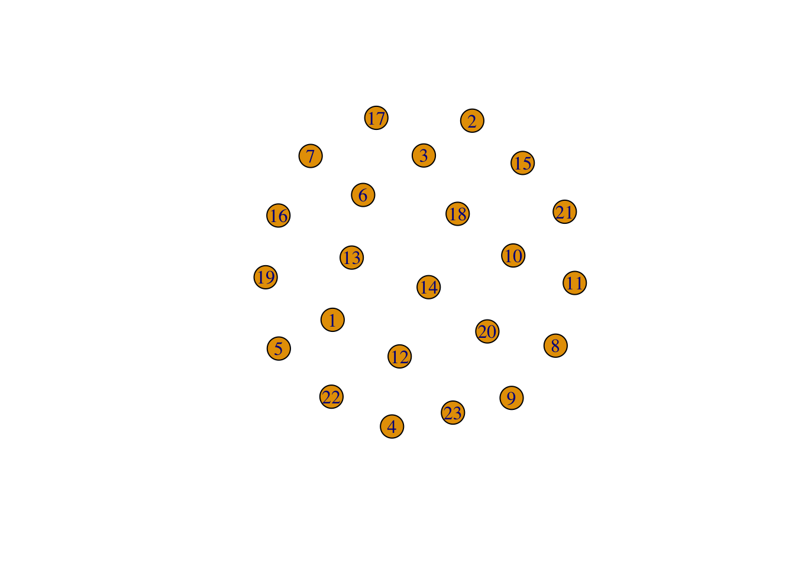
10.4.1.2 Edges (Links)
graphObject <- graph_from_literal(
1--2:3:4:6:7:8:9, 2--1:20:22:11:3, 3, 4, 5, 6, 7, 8, 9, 10, 11, 12,
13, 14, 15, 16, 17, 18, 19, 20, 21, 22, 23)
set.seed(5)
plot(graphObject)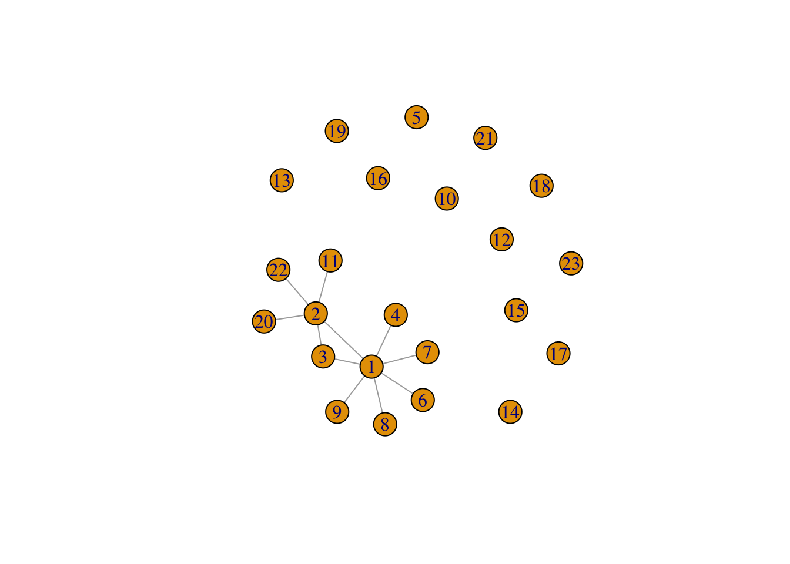
graphObject <- graph_from_literal(
1--2:3:4:6:7:8:9, 2--1:20:22:11:3, 3--1:2:11:10:4, 4--1:3:10:5:6,
5--6:4:10:12:6, 6--1:4:5:12:15,6-7, 7--1:6:15:16:8, 8--1:7:16:17:9,
9--1:8:17:19:20, 10--3:11:23:12:5:4, 11--2:22:10:3, 12--5:10:23:13:15:6,
13--12:23:14:15, 14--13:17:16:15, 15--6:12:13:14:16:7, 16--7:15:14:17:8,
17--14:18:9:8:16, 18--9:17:19, 19--9:18:21:20, 20--2:9:19:21,
22--2:20:21:11, 23--10:13:12)
set.seed(5)
plot(graphObject)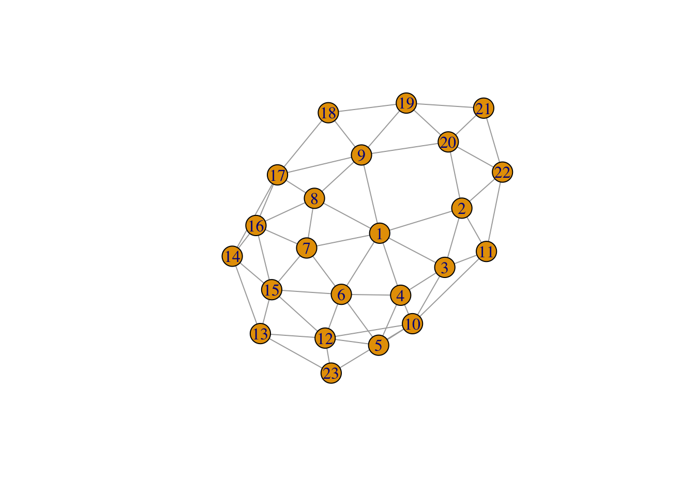
10.4.1.3 Major measures
# centrality measures
V(graphObject)$degree <- degree(graphObject, mode="all")
V(graphObject)$centr_degree <- centr_degree(graphObject, mode="all", normalized=T)$res
V(graphObject)$centr_eigen <- centr_eigen(graphObject, directed=F, normalized=F)$vector
V(graphObject)$betweenness <- betweenness(graphObject, directed=F)
V(graphObject)$centr_betw <- centr_betw(graphObject, directed=F, normalized=T)$res
# clustering (selected algorithms) some of these alrgorithms may take a while to run on large graphs
V(graphObject)$cl_walktrap <- as.character(cluster_walktrap(graphObject)$membership)
V(graphObject)$cl_louvain <- as.character(cluster_louvain(graphObject)$membership)test <- as_data_frame(graphObject, what="vertices")10.4.1.4 Degree centrality:
set.seed(5)
ggraph(graphObject, 'igraph', algorithm = 'with_fr') +
geom_edge_link(width=0.5) +
geom_node_point(aes(size=degree, color=degree), alpha=1) +
geom_node_label(aes(label=name), color="black", size=3, repel=TRUE, alpha=1) +
ggforce::theme_no_axes() +
theme_graph() +
scale_colour_gradient(low="black", high="red") +
scale_size_continuous(range=c(1,10))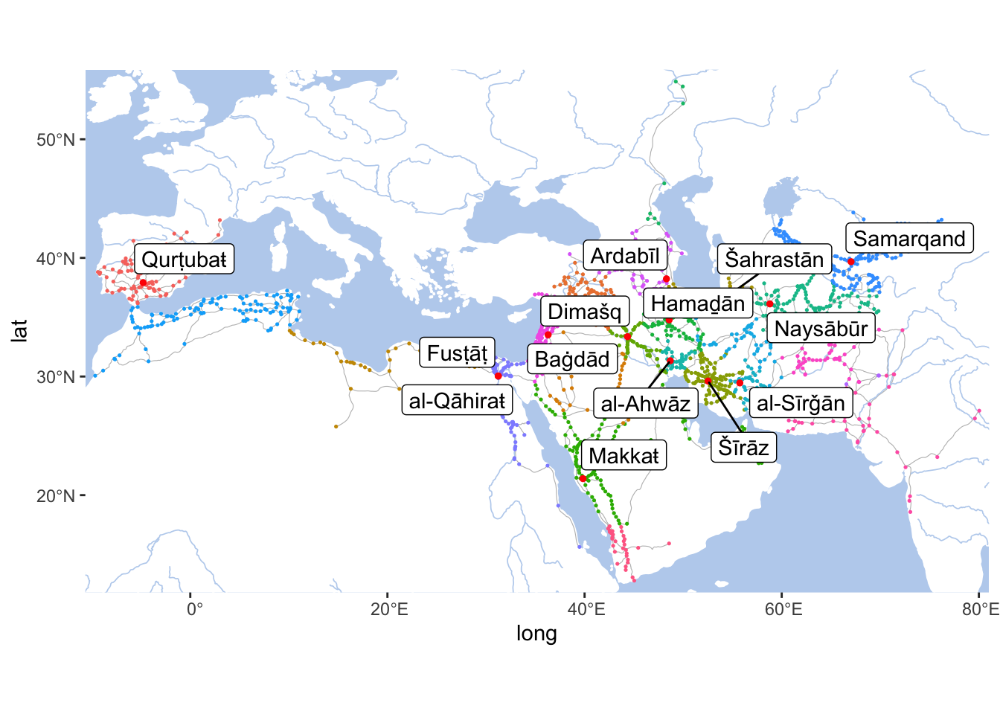
10.4.1.5 Betweenness / Betweenness centrality:
set.seed(5)
ggraph(graphObject, 'igraph', algorithm = 'with_fr') +
geom_edge_link(width=0.5) +
geom_node_point(aes(size=betweenness, color=betweenness), alpha=1) +
geom_node_label(aes(label=name), color="black", size=3, repel=TRUE, alpha=1) +
ggforce::theme_no_axes() +
theme_graph() +
scale_colour_gradient(low="black", high="red") +
scale_size_continuous(range=c(1,10))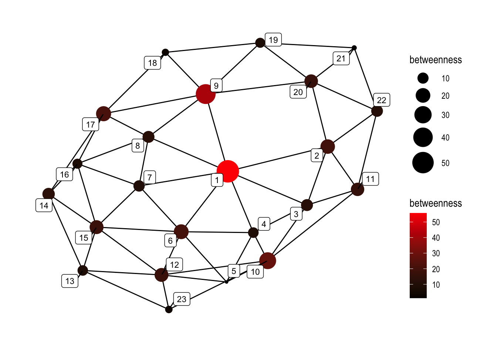
10.4.1.6 Eigenvector centrality:
set.seed(5)
ggraph(graphObject, 'igraph', algorithm = 'with_fr') +
geom_edge_link(width=0.5) +
geom_node_point(aes(size=centr_eigen, color=centr_eigen), alpha=1) +
geom_node_label(aes(label=name), color="black", size=3, repel=TRUE, alpha=1) +
ggforce::theme_no_axes() +
theme_graph() +
scale_colour_gradient(low="black", high="red") +
scale_size_continuous(range=c(1,10))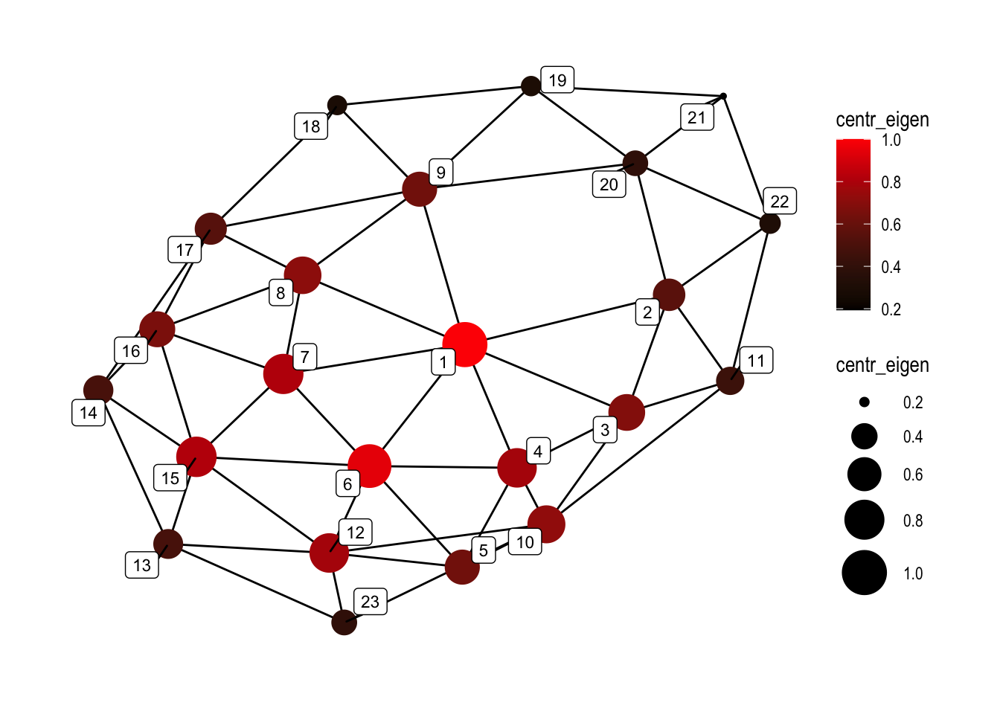
10.4.1.7 Clustering/Communities:
set.seed(5)
ggraph(graphObject, 'igraph', algorithm = 'with_fr') +
geom_edge_link(width=0.5) +
geom_encircle(s_shape=.1, expand=0.01, alpha=.25, col="black", aes(x=x, y=y, group=cl_louvain, fill=cl_louvain))+
geom_node_point(aes(color=cl_louvain, size=degree), alpha=1) +
geom_node_label(aes(label=name), color="black", size=3, repel=TRUE, alpha=1) +
ggforce::theme_no_axes() +
theme_graph()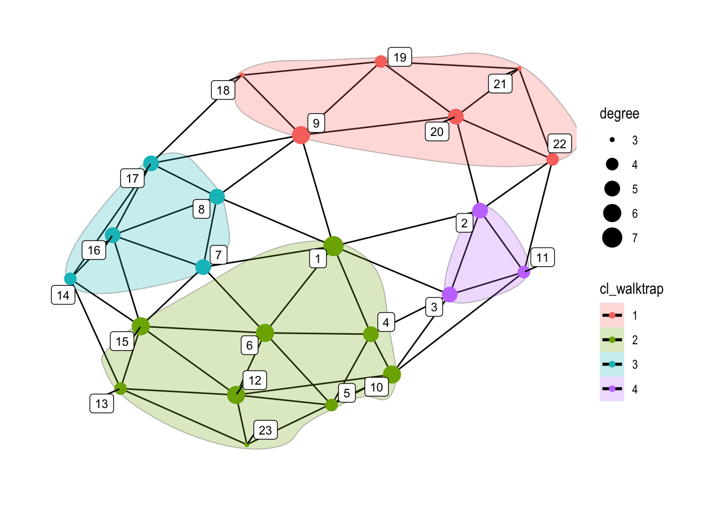
set.seed(5)
ggraph(graphObject, 'igraph', algorithm = 'with_fr') +
geom_edge_link(width=0.5) +
geom_encircle(s_shape=.1, expand=0.01, alpha=.25, col="black", aes(x=x, y=y, group=cl_walktrap, fill=cl_walktrap))+
geom_node_point(aes(color=cl_walktrap, size=degree), alpha=1) +
geom_node_label(aes(label=name), color="black", size=3, repel=TRUE, alpha=1) +
ggforce::theme_no_axes() +
theme_graph()10.4.2 Data for Networks: Nodes and Edges

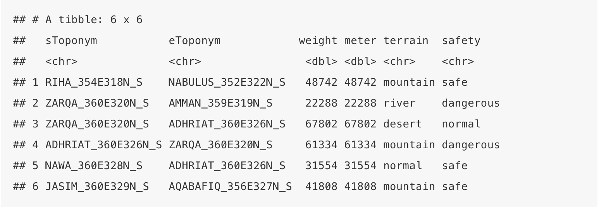
10.4.3 Modeling a Network
Hypothetical example: people with different political views living in Vienna.1
- Data (tabular): person, residence district, frequented districts, dates (1800-2000), political views;
- Possible Networks:
- Option 1: nodes: persons; edges: residence districts (this one will not be a geographical network); edges weights: no weights;
- Option 2: nodes: districts; edges: people (edges between the residence district and frequented districts: 1–2, 2–3, 1–3); edges weights: the number of same edges;
- Option 3: nodes: districts; edges: political views (edges between the residence district and frequented districts of people with shared political views: 1–2, 2–3, 1–3); edges weights: the number of same edges;
- Option 4: and so on…
A note on unimodal (only one types of nodes), bimodal, and multimodal networks:
Image source: https://scottbot.net/lets-talk-about-networks/.

Nodes: authors and their books; Edges: authorship

Nodes: authors and their books; Edges: authorship, collaboration
Main points:
- one should always find ways to convert data into unimodal networks, as this is the type of networks that most algorithms are designed to work with;
- a bimodal network should be converted into a unimodal network (or, perhaps, a series of unimodal networks) where the second type of nodes becomes edges and their weights.
- for example: a bimodal network: nodes are individuals and cities, edges—connections of individuals to cities; connections of cities to cities; connections of individuals to individuals (potentially); unimodal networks: nodes are individuals; edges are shared cities with which individuals are connected. Thus, in this case, a connection between two individuals become the city that they havein common; the weight of this connection may be based on a number of shared cities. In other words, the connection between two individuals that share ten same cities will be stronger than between individuals that share only one; and there will be no connection between individuals who have no cities in common.
- unimodal network: one type of nodes; one type of connections; that said, the weight of connections may be aggregated from multiple parameters. For example, we have three individuals who share the city of Vienna as their connection; however, person 1 and person 2 also share something else—a district; the period of their lives overlap, etc., while person 1 and person 3 lived in different districts and their lives did not overlap chronologically. Thus, the weight of the edge between person 1 and 2 will be larger, than between 1 and 3 and two and 3. Yet, if there is also person 4, who has no connection to Vienna, his/her connection to P1, P2, and P3 will be nonexistent, unless we consider other parameters for the edges (shared lifetime, for example; or, larger geographical entities, etc.)
10.4.4 Most common analytical procedures: some recipes
10.4.4.1 Basemap
Download this file with extra data layers: map_objects.zip. Unzip it and make sure to change the path in the code below so that you can load the data.
RDSfolder="./data_temp/map_objects/"
rivers_df <- readRDS(paste0(RDSfolder,"rivers_df.rds"))
aral_sea_df <- readRDS(paste0(RDSfolder,"aral_sea_df.rds"))
routes_df <- readRDS(paste0(RDSfolder,"routes_df.rds"))Now, le’t create a base layer map, as we did before:
NB: to install rnaturalearthhires, you may need to run: remotes::install_github("ropensci/rnaturalearthhires")
Base layer for the medieval Islamic world:
world <- ne_countries(scale="medium", returnclass="sf")
colWater= "lightsteelblue2"
colLand = "white"
colRout = "grey"
#xlimVal=c(-12,80); ylimVal=c(10,50)
IslamicWorldBaseBare <- ggplot(data=world) +
geom_sf(fill=colLand, color=colLand) +
# rivers, aral sea, and routes
geom_path(data=routes_df, aes(x=long, y=lat, group=id), color=colRout, size=.2) +
geom_path(data=rivers_df, aes(x=long, y=lat, group=group), color=colWater, alpha=1, size=.3) +
geom_polygon(data=aral_sea_df, aes(x=long, y=lat, group=group), color=colWater, fill=colWater, size=.2) +
# map limits and theme
#coord_sf(xlim=xlimVal, ylim=ylimVal, expand=FALSE) +
theme(panel.grid.major=element_line(color=colWater, linetype="dotted", size=0.5),
panel.background=element_rect(fill=colWater),legend.position="none", panel.border=element_blank())
IslamicWorldBaseBare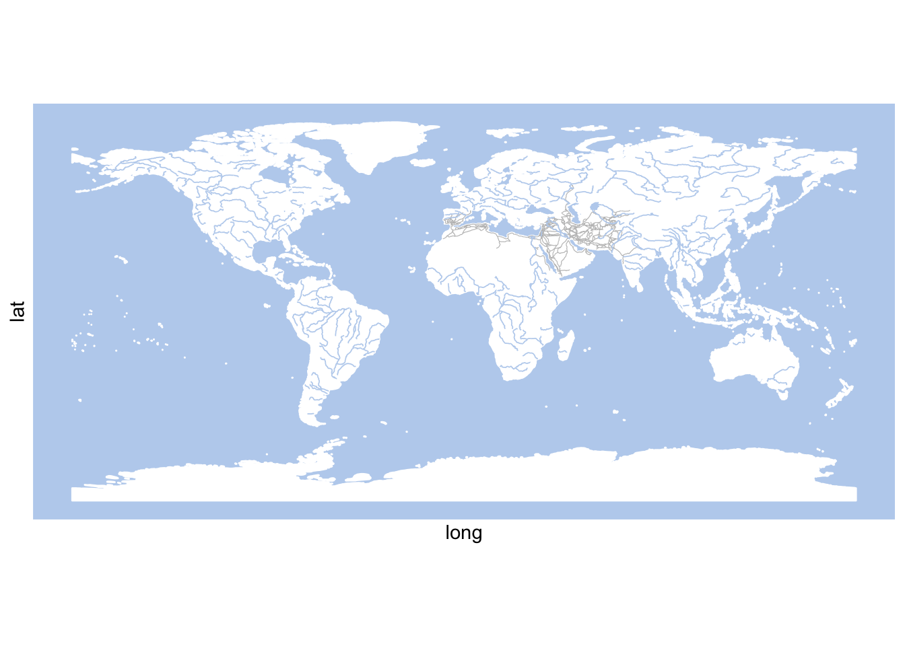
Routes are plotted in grey; rivers — in blue. We will not modify routes in any way with additional data for visualization. Let’s now load network data, which will include the following:
- nodes will be settlements;
- edges will be “routes” that we see on the map, but we will use only values, not the “drawings” of these routes for our analysis. More specifically, our edges data will include connections between places. Here we will need some additional steps.
Let’s load edges first, as they are rather simple (download: althurayya.zip). There is a lot of data that we will not need, so I will filter it out,
edges <- read_delim("./data_temp/althurayya/routes.csv",
"\t", escape_double = FALSE, trim_ws = TRUE)
edges <- edges %>%
mutate(weight = meter) %>%
select(sToponym, eToponym, weight, meter, terrain, safety)
head(edges)## # A tibble: 6 x 6
## sToponym eToponym weight meter terrain safety
## <chr> <chr> <dbl> <dbl> <chr> <chr>
## 1 RIHA_354E318N_S NABULUS_352E322N_S 48742 48742 mountain safe
## 2 ZARQA_360E320N_S AMMAN_359E319N_S 22288 22288 river dangerous
## 3 ZARQA_360E320N_S ADHRIAT_360E326N_S 67802 67802 desert normal
## 4 ADHRIAT_360E326N_S ZARQA_360E320N_S 61334 61334 mountain dangerous
## 5 NAWA_360E328N_S ADHRIAT_360E326N_S 31554 31554 normal safe
## 6 JASIM_360E329N_S AQABAFIQ_356E327N_S 41808 41808 mountain safeHere we have sToponym, eToponym, and meter, i.e. the distance from the start-place to the end-place. The “start” and the “end” do not really carry any meaning here as the network is undirected.
We will use the values from meter as weight for now. Below, we will discuss how these values may be modeled in order to make your network more nuanced.
Now, the nodes:
nodes <- read_delim("./data_temp/althurayya/settlements.csv",
"\t", escape_double = FALSE, trim_ws = TRUE)
nodes <- nodes %>%
separate(col=coordinates, into=c("l", "lon", "lat", "r"), sep="([\\[, \\]]+)") %>%
select(settlement_id, names_eng_translit, region_URI, top_type, lon, lat) %>%
mutate(lon = as.numeric(lon), lat = as.numeric(lat))
# remove nodes which are not in the network
nwNodes <- unique(c(edges$sToponym, edges$eToponym))
nodes <- nodes %>%
filter(settlement_id %in% nwNodes)
head(nodes)## # A tibble: 6 x 6
## settlement_id names_eng_translit region_URI top_type lon lat
## <chr> <chr> <chr> <chr> <dbl> <dbl>
## 1 QAHIRA_312E300N_S al-Qāhiraŧ Misr_RE metropoles 31.2 30.0
## 2 WASHQA_003W421N_S Wašqaŧ Andalus_RE towns -0.354 42.2
## 3 BALANSIYYA_004W394N_S Balansiyyaŧ Andalus_RE towns -0.415 39.4
## 4 SHAQR_004W391N_S al-Šaqr Andalus_RE villages -0.437 39.2
## 5 QANT_004W383N_S Qānt Andalus_RE towns -0.471 38.3
## 6 SHATIBA_005W389N_S Šātibaŧ Andalus_RE towns -0.523 39.0Let’s quickly generate a map with our nodes — so that you have a general idea:
nodesTop <- nodes %>%
filter(top_type == "metropoles")
annotData <- nodesTop
metropoles <- IslamicWorldBaseBare +
geom_point(data = nodes, aes(x=lon, y=lat, col=region_URI), alpha=1, size=0.25) +
geom_point(data = annotData, aes(x=lon, y=lat), col="red", size=1) +
geom_label_repel(data = annotData, aes(label = names_eng_translit, x=lon, y=lat)) +
coord_sf(xlim=c(min(nodes$lon)-1, max(nodes$lon)+1),
ylim=c(min(nodes$lat)-1, max(nodes$lat)+1),
expand=FALSE)
metropoles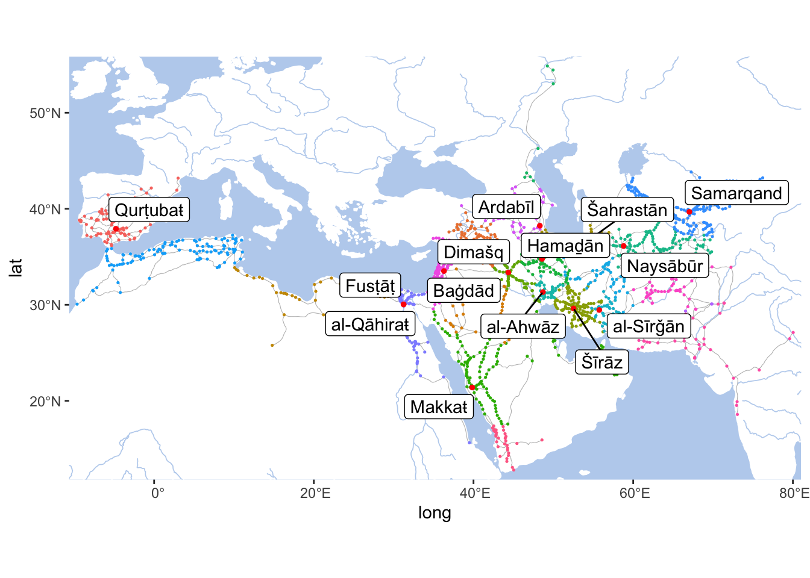
The following lines of code will help you to save your maps without unnecessary information — cut out and keep only the map. There may still be white stripes on the sides, so you may have to need to play around with the width and height parameters.
gt <- ggplot_gtable(ggplot_build(metropoles))
ge <- subset(gt$layout, name == "panel")
ggsave(file=paste0("./files/networks/IW_metropoles.png"),
# the following line focuses on the graph
plot=grid.draw(gt[ge$t:ge$b, ge$l:ge$r]),
# width and height should be experimentally adjusted to remove white space
dpi=300,width=8.4,height=4.65)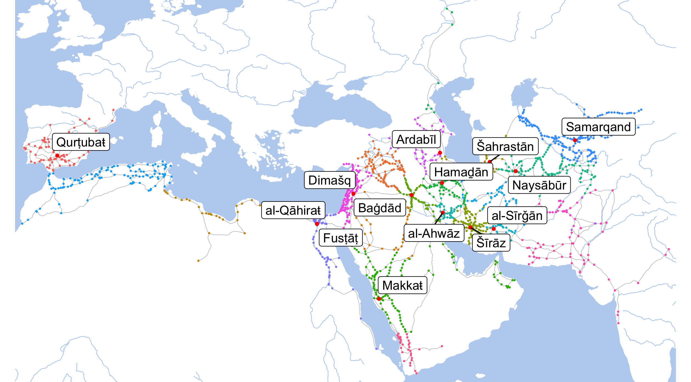
Note: Colors of dots on this map indicate different provinces of the early Islamic world. Considering that borders—in the modern sense—did not exist back then, this is one of the most efficient ways of displaying the extents of regions. White areas effectively indicate uninhabited lands—in most cases, deserts, mountains, or mountainous deserts.
10.4.5 The Network
Now, as we have both the nodes and the edges, we can start our analysis. There are a few things that make sense to begin with:
look for the most important nodes in the network: i.e. those nodes, through which most other nodes are connected to each other (in practical terms that would mean that most people would travel through those places and, as a result, we may expect that these places would play an important role in cultural exchange); this analysis can be done in a variety of ways—we can use the network as is, or we can apply a variety of modifications that would help us to “encode” some additional historical information that might be missing from the network. By and large, this includes different centrality measures (degree, betweenness, eigenvector centrality, etc.);
look for most closely interconnected clusters of nodes, which may may help us to understand the historical confines of specific areas, such as provinces, states, conquered territories and the like;
look for the shortest paths within the network (i.e., how one would travel from one place to another);
and, if we have relevant data, we can “overplot” other networks on geographical maps (movements of people); in this case, however, the network will be different and we will simply use the map as its layout.
We start by creating a network object in the following manner:
library(igraph)
iwNetwork <- graph_from_data_frame(d=edges, vertices=nodes, directed=FALSE)
iwNetwork## IGRAPH 544ca35 UNW- 1692 2053 --
## + attr: name (v/c), names_eng_translit (v/c), region_URI (v/c),
## | top_type (v/c), lon (v/n), lat (v/n), weight (e/n), meter (e/n),
## | terrain (e/c), safety (e/c)
## + edges from 544ca35 (vertex names):
## [1] NABULUS_352E322N_S --RIHA_354E318N_S
## [2] AMMAN_359E319N_S --ZARQA_360E320N_S
## [3] ZARQA_360E320N_S --ADHRIAT_360E326N_S
## [4] ZARQA_360E320N_S --ADHRIAT_360E326N_S
## [5] NAWA_360E328N_S --ADHRIAT_360E326N_S
## [6] AQABAFIQ_356E327N_S--JASIM_360E329N_S
## + ... omitted several edgesThe description of an igraph object starts with four letters (in our case: UNW-):
DorU, for a directed or undirected graphNfor a named graph (where nodes have a name attribute)Wfor a weighted graph (where edges have a weight attribute)Bfor a bipartite (two-mode) graph (where nodes have a type attribute)
In our case, it is UNW-, i.e.: undirected, named, weighted, and not bipartite.
The two numbers that follow (110 444) refer to the number of nodes and edges in the graph. The description also lists node & edge attributes, for example:
(g/c)- graph-level character attribute(v/c)- vertex-level character attribute(e/n)- edge-level numeric attribute
igraph objects provide us with an easy access to nodes, edges, and their attributes with the following commands:
head(E(iwNetwork), 20)## + 20/2053 edges from 544ca35 (vertex names):
## [1] NABULUS_352E322N_S --RIHA_354E318N_S
## [2] AMMAN_359E319N_S --ZARQA_360E320N_S
## [3] ZARQA_360E320N_S --ADHRIAT_360E326N_S
## [4] ZARQA_360E320N_S --ADHRIAT_360E326N_S
## [5] NAWA_360E328N_S --ADHRIAT_360E326N_S
## [6] AQABAFIQ_356E327N_S --JASIM_360E329N_S
## [7] NAWA_360E328N_S --JABIYA_360E329N_S
## [8] JABIYA_360E329N_S --JASIM_360E329N_S
## [9] ADHRIAT_360E326N_S --ROUTPOINT0121_362E333N_O
## [10] JASIM_360E329N_S --ROUTPOINT0121_362E333N_O
## + ... omitted several edgeshead(V(iwNetwork), 20)## + 20/1692 vertices, named, from 544ca35:
## [1] QAHIRA_312E300N_S WASHQA_003W421N_S BALANSIYYA_004W394N_S
## [4] SHAQR_004W391N_S QANT_004W383N_S SHATIBA_005W389N_S
## [7] SARAQUSA_009W416N_S MURSIYA_011W379N_S TUTILA_016W420N_S
## [10] LURQA_017W376N_S MADINASALIM_024W411N_S BAJJANA_024W369N_S
## [13] MARIYYA_025W368N_S WADIHIJARA_031W406N_S WADIYASH_031W373N_S
## [16] BAYYASA_034W379N_S GHARNATA_035W372N_S LIBIRA_036W372N_S
## [19] QALARABAH_037W388N_S JAYYAN_038W377N_Shead(E(iwNetwork)$weight, 20)## [1] 48742 22288 67802 61334 31554 41808 5016 6380 81803 42594
## [11] 97452 188149 43254 84816 47117 19536 24577 78493 28113 65632head(V(iwNetwork)$name, 20)## [1] "QAHIRA_312E300N_S" "WASHQA_003W421N_S" "BALANSIYYA_004W394N_S"
## [4] "SHAQR_004W391N_S" "QANT_004W383N_S" "SHATIBA_005W389N_S"
## [7] "SARAQUSA_009W416N_S" "MURSIYA_011W379N_S" "TUTILA_016W420N_S"
## [10] "LURQA_017W376N_S" "MADINASALIM_024W411N_S" "BAJJANA_024W369N_S"
## [13] "MARIYYA_025W368N_S" "WADIHIJARA_031W406N_S" "WADIYASH_031W373N_S"
## [16] "BAYYASA_034W379N_S" "GHARNATA_035W372N_S" "LIBIRA_036W372N_S"
## [19] "QALARABAH_037W388N_S" "JAYYAN_038W377N_S"Keep these commands in mind because they will help you to extract necessary information from graph objects that you create with igraph and reuse them elsewhere.
10.4.6 Measures of centrality
Now we have our network object in the variable called iwNetwork and we can calculate several most common measures of centrality. They should tell us something about the structure of the network and the role of specific nodes. We will return to this in what follows…
10.4.7 The Shortest Path
You may be interested in finding the shortest path within a specific network. We can do that with the same igraph library and put it on the map. Let’s say, we want to find the shortest path from Baghdad (Baġdād) to Damascus (Dimašq). The following code will give us a vector (sequence) of nodes from one point to another. The second line of code extracts IDs of places from a list of values (we will need a simple vector).
baghdad_to_damascus <- shortest_paths(iwNetwork, from = "BAGHDAD_443E333N_S", to = "DIMASHQ_363E335N_S", weights = E(iwNetwork)$weight)$vpath
baghdad_to_damascus <- names(unlist(baghdad_to_damascus))The shortest path is found with the Dijkstra algorithm, which is currently the most standard way of calculating the shortest path within a network. Essentially, it finds the path between A and B, where the sum of edges (like distance in meters, for example) is the shortest. Therte are plenty of videos on YouTube with the detailed explanations of how it works (for example, this). Please, take a look, understanding how it works may help you to find a way to use it in other contexts.
We can graph this in the following manner (for simplicity, the red line does not follow the actual routes, but draws a straight line between settlements along the path):
path <- tibble(ID = baghdad_to_damascus) %>%
left_join(nodes, by = c("ID" = "settlement_id"))
annotData <- path
IslamicWorldBaseBare +
geom_path(data = annotData, aes(x=lon, y=lat), col="red") +
geom_point(data = annotData, aes(x=lon, y=lat), col="red", size=2) +
geom_label_repel(data = annotData, aes(label = names_eng_translit, x=lon, y=lat)) +
coord_sf(xlim=c(min(annotData$lon)-5, max(annotData$lon)+5),
ylim=c(min(annotData$lat)-3, max(annotData$lat)+3),
expand=FALSE)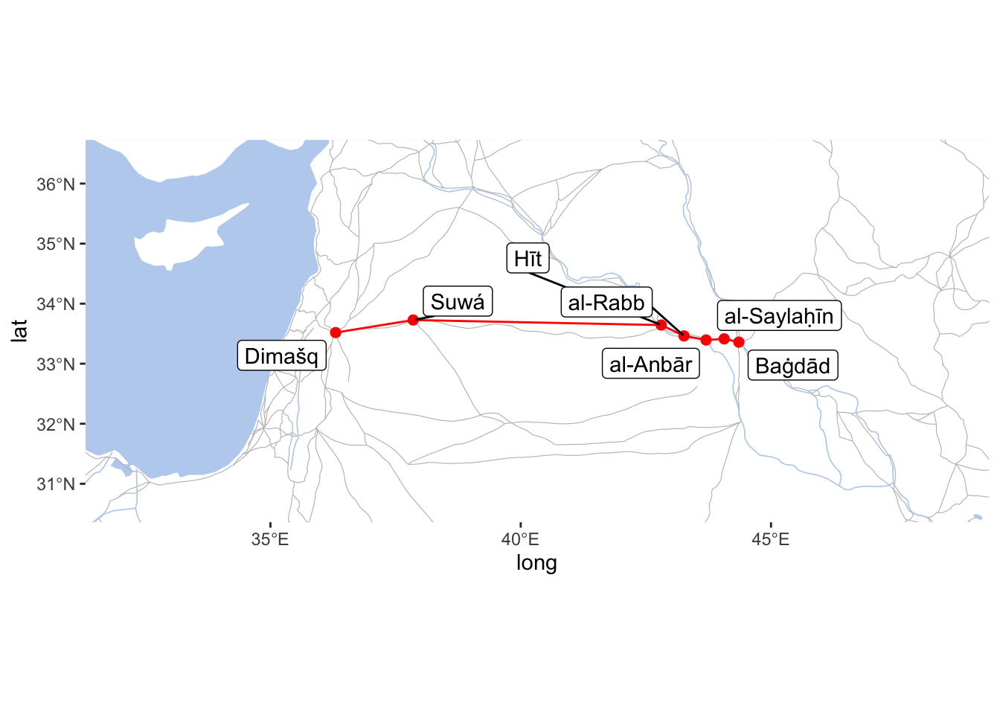
Everything worked as planned, but we need to consider geography and history in order to generate a path that actually makes sense. If we look at the image below, the shortest path (these paths are modeled in althurayya.github.io). The problem with the shortest path is that it is going through the desert, and while it is possible to take this path, this was the path that was avoided as very dangerous. The prefered path was to travel along the Euphrates or the Tigris rivers, and, preferably, along the path with more settlements along the way. On the map below the green path is closer to the prefered option (ideally, it should go through Samarra (Sāmarrāʾ), Mosul (al-Mawṣil), Ar Raqqah (al-Raqqaŧ), and, probably, Aleppo (Ḥalab)).

This is where we can modify some parameters of our network in order to make it work more in line with our geographical and historical knowledge. The Dijkstra algorithm takes into account exclusively the lengths of route sections between the nodes in the network, but we can modify these lengths to make the Dijkstra algorithm work the way we want. This will be the easiest and the most flexible way to re-model our network — we can modify these lengths by introducing additional parameters (multipliers, or dividers). For example, if a node is a “capital” or a “town,” it will be preferable to travel through this node, rather than through a “village” or a “waystation.” Say, we have two equally plausible routes, one between a town and a waystation and another between the same town and another town. We can assign specific multipliers to the types of settlements and use them to adjust the length of paths. Say, a multiplier for “town” will be 0.5, and for a “waystation” — 2. This will make the route between two towns “shorter” that the route between a town and a waystation. As a result, the Dijkstra algorithm will be giving preference to these “shorter” paths. Now, how can we implement this?
These are the types of nodes that we have. We add multipliers that will help us to reduce or to increase “lengths” of routes based on the types of nodes that they connect.
types <- nodes$top_type %>%
sort() %>% unique()
types <- tibble(type = types,
mltp = c(0.33, 0.25, 1, 1, 0.5, 1, 2, 2, 2))
types## # A tibble: 9 x 2
## type mltp
## <chr> <dbl>
## 1 capitals 0.33
## 2 metropoles 0.25
## 3 quarters 1
## 4 sites 1
## 5 towns 0.5
## 6 villages 1
## 7 waters 2
## 8 waystations 2
## 9 xroads 2First, let’s add these multipliers to our nodes:
nodesM <- nodes %>%
left_join(types, by = c("top_type" = "type"))
nodesM## # A tibble: 1,692 x 7
## settlement_id names_eng_transl… region_URI top_type lon lat mltp
## <chr> <chr> <chr> <chr> <dbl> <dbl> <dbl>
## 1 QAHIRA_312E300N_S al-Qāhiraŧ Misr_RE metropol… 31.2 30.0 0.25
## 2 WASHQA_003W421N_S Wašqaŧ Andalus_RE towns -0.354 42.2 0.5
## 3 BALANSIYYA_004W394… Balansiyyaŧ Andalus_RE towns -0.415 39.4 0.5
## 4 SHAQR_004W391N_S al-Šaqr Andalus_RE villages -0.437 39.2 1
## 5 QANT_004W383N_S Qānt Andalus_RE towns -0.471 38.3 0.5
## 6 SHATIBA_005W389N_S Šātibaŧ Andalus_RE towns -0.523 39.0 0.5
## 7 SARAQUSA_009W416N_S Saraqūsaŧ Andalus_RE towns -0.929 41.6 0.5
## 8 MURSIYA_011W379N_S Mursiyaŧ Andalus_RE towns -1.11 38.0 0.5
## 9 TUTILA_016W420N_S Tuṭīlaŧ Andalus_RE towns -1.63 42.0 0.5
## 10 LURQA_017W376N_S Lurqaŧ Andalus_RE towns -1.73 37.7 0.5
## # … with 1,682 more rowsWe also have additional classification of routes in terms of terrain and safety. We can use these as additional multipliers. (These may be more efficient, but they are more time consuming to create.)
terrainDF <- tibble("terrain" = c("desert", "normal", "mountain", "river"),
"mltp" = c(2, 1, 1.25, 0.75))
terrainDF## # A tibble: 4 x 2
## terrain mltp
## <chr> <dbl>
## 1 desert 2
## 2 normal 1
## 3 mountain 1.25
## 4 river 0.75safetyDF <- tibble("safety" = c("dangerous", "safe", "normal"),
"mltp" = c(2, 0.75, 1))
safetyDF## # A tibble: 3 x 2
## safety mltp
## <chr> <dbl>
## 1 dangerous 2
## 2 safe 0.75
## 3 normal 1Now, we can generate new “weights” for our edges.
Note: there are no strict rules with regard to how you modify your network, your nodes and your edges; it must make sense, so, use your judgement; consult your peers and your advisers; always clearly describe the process of your modifications. For example, the following is happenning below: we multiply the length in meters by the sum of node multipliers (here lower values will turn nodes into magnets of sorts—metropoles and capitals will act as natural attractors); then we multiply the resulting values by the sum of “terrain” and “safety” multipliers (here higher values will make edges “longer”—i.e, routes that go through deserts will become longer than routes ging through a plain).
# simply reloading edges data
edges <- read_delim("./data_temp/althurayya/routes.csv",
"\t", escape_double = FALSE, trim_ws = TRUE)## Parsed with column specification:
## cols(
## route_id = col_character(),
## sToponym = col_character(),
## sToponym_type = col_character(),
## eToponym = col_character(),
## eToponym_type = col_character(),
## terrain = col_character(),
## safety = col_character(),
## coordinates = col_character(),
## meter = col_double()
## )edges <- edges %>%
mutate(weight = meter) %>%
select(sToponym, eToponym, weight, meter, terrain, safety)
head(edges)## # A tibble: 6 x 6
## sToponym eToponym weight meter terrain safety
## <chr> <chr> <dbl> <dbl> <chr> <chr>
## 1 RIHA_354E318N_S NABULUS_352E322N_S 48742 48742 mountain safe
## 2 ZARQA_360E320N_S AMMAN_359E319N_S 22288 22288 river dangerous
## 3 ZARQA_360E320N_S ADHRIAT_360E326N_S 67802 67802 desert normal
## 4 ADHRIAT_360E326N_S ZARQA_360E320N_S 61334 61334 mountain dangerous
## 5 NAWA_360E328N_S ADHRIAT_360E326N_S 31554 31554 normal safe
## 6 JASIM_360E329N_S AQABAFIQ_356E327N_S 41808 41808 mountain safeNow, updating the weights based on our multipliers:
nodesL <- nodesM %>%
select(settlement_id, mltp)
edgesM <- edges %>%
left_join(nodesL, by = c("sToponym" = "settlement_id")) %>%
left_join(nodesL, by = c("eToponym" = "settlement_id")) %>%
left_join(terrainDF, by = c("terrain" = "terrain")) %>%
left_join(safetyDF, by = c("safety" = "safety")) %>%
mutate(weight_mod = meter) %>%
mutate(weight_mod = weight_mod * (mltp.x + mltp.y)) %>%
mutate(weight_mod = weight_mod * (mltp.x.x + mltp.y.y))
head(edgesM)## # A tibble: 6 x 11
## sToponym eToponym weight meter terrain safety mltp.x mltp.y mltp.x.x mltp.y.y
## <chr> <chr> <dbl> <dbl> <chr> <chr> <dbl> <dbl> <dbl> <dbl>
## 1 RIHA_35… NABULUS… 48742 48742 mounta… safe 0.5 0.5 1.25 0.75
## 2 ZARQA_3… AMMAN_3… 22288 22288 river dange… 2 0.5 0.75 2
## 3 ZARQA_3… ADHRIAT… 67802 67802 desert normal 2 0.33 2 1
## 4 ADHRIAT… ZARQA_3… 61334 61334 mounta… dange… 0.33 2 1.25 2
## 5 NAWA_36… ADHRIAT… 31554 31554 normal safe 0.5 0.33 1 0.75
## 6 JASIM_3… AQABAFI… 41808 41808 mounta… safe 2 1 1.25 0.75
## # … with 1 more variable: weight_mod <dbl>Now, let’s try to find the shortest route with our new data:
iwNetworkMod <- graph_from_data_frame(d=edgesM, vertices=nodesM, directed=FALSE)
baghdad_to_damascusMod <- shortest_paths(iwNetworkMod, from = "BAGHDAD_443E333N_S", to = "DIMASHQ_363E335N_S", weights = E(iwNetworkMod)$weight_mod)$vpath
baghdad_to_damascusMod <- names(unlist(baghdad_to_damascusMod))
pathMod <- tibble(ID = baghdad_to_damascusMod) %>%
left_join(nodes, by = c("ID" = "settlement_id"))
pathModLabels <- pathMod %>%
mutate(label = names_eng_translit) %>%
filter(top_type == "metropoles" | top_type == "capitals")
annotData <- pathMod
IslamicWorldBaseBare +
geom_path(data = annotData, aes(x=lon, y=lat), col="red") +
geom_point(data = annotData, aes(x=lon, y=lat), col="red", size=2) +
geom_label_repel(data = pathModLabels, aes(label = label, x=lon, y=lat), max.overlaps = 100) +
coord_sf(xlim=c(min(annotData$lon)-5, max(annotData$lon)+5),
ylim=c(min(annotData$lat)-3, max(annotData$lat)+3),
expand=FALSE)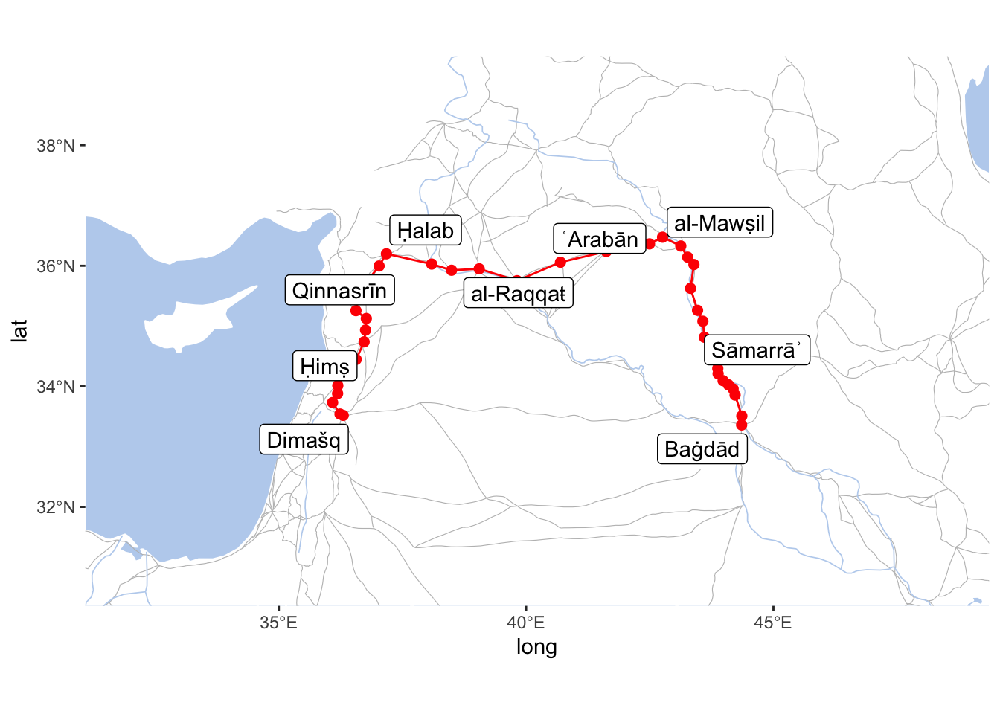
As you can see, the results are quite what we wanted. This is is not the easiest approach to implement, but it will give you full control over modeling different processes within your geographical networks. (Important: the data used in this section is not complete; “terrain” and “safety” classifications are random, except for this specific example.)
10.4.8 Centrality measures, Clusters/Communities
A way to find large components of any network is to apply some cluster analysis algorithms. There are many different algorithms which are included in igraph. One needs to understand how they work and for which purposes they have been developed. For our current context, the following algorithms are most fitting. Please, check additional references at the end of the lesson for more details.
Let’s reload our data. For cluster analysis we will need to modify weights of our edges, since cluster analysis algorithms expect more important edges to have higher weight—in other words, shorter routes must have higher weight than longer ones (for the Dijkstra algorithm we needed the opposite).
I will condense everything in one block:
# file with additional metadata on nodes
mapLayer <- read_delim("./data_temp/althurayya/topMicroUPD.csv", "\t", escape_double = FALSE, trim_ws = TRUE)
mapLayer_Filtered <- mapLayer %>% filter(!is.na(aRegion))
aRegions <- read_delim("./data_temp/althurayya/top_aRegions_VizCenters.csv", "\t", escape_double = FALSE, trim_ws = TRUE)
# processing main data: loading edges and creating a network object
althurayyaE <- read_delim("./data_temp/althurayya/althurayya_edges.csv", "\t", escape_double = FALSE, trim_ws = TRUE) %>%
mutate(weight = signif(1/length*10000, digits=2))
althurayyaNetwork <- graph_from_data_frame(d=althurayyaE, directed=F)
althurayyaNetwork <- simplify(althurayyaNetwork) # this helps to remove duplicate edges and loop edges
# centrality measures
V(althurayyaNetwork)$degree <- degree(althurayyaNetwork, mode="all")
V(althurayyaNetwork)$centr_eigen <- centr_eigen(althurayyaNetwork, directed=F, normalized=F)$vector
V(althurayyaNetwork)$betweenness <- betweenness(althurayyaNetwork, directed=F)
V(althurayyaNetwork)$centr_betw <- centr_betw(althurayyaNetwork, directed=F, normalized=T)$res
# clustering (selected algorithms) some of these alrgorithms may take a minute of two to run
V(althurayyaNetwork)$cl_walktrap <- as.character(cluster_walktrap(althurayyaNetwork)$membership)
V(althurayyaNetwork)$cl_louvain <- as.character(cluster_louvain(althurayyaNetwork)$membership)
# extract nodes/vertices for mapping
althurayyaNodes <- as_data_frame(althurayyaNetwork, what="vertices")
althurayyaNodes <- althurayyaNodes %>%
rename(URI = name) %>%
left_join(mapLayer, by="URI") %>%
filter(!is.na(aRegion))
head(althurayyaNodes)## URI degree centr_eigen betweenness centr_betw cl_walktrap
## 1 ABADHA_526E311N_S 2 1.195227e-16 4681.0 8465.361 10
## 2 ABADHA_537E297N_S 2 0.000000e+00 3476.5 9844.930 1
## 3 ABARKATH_673E397N_S 2 0.000000e+00 0.0 42306.633 24
## 4 ABARQUH_532E311N_S 2 0.000000e+00 6596.0 7803.052 84
## 5 ABASKUN_540E370N_S 1 0.000000e+00 0.0 0.000 11
## 6 ABBADAN_482E303N_S 2 2.259505e-09 416626.2 272153.080 19
## cl_louvain REG_MESO aRegion TR SEARCH EN
## 1 25 Fars_RE SW_Iran_MR Ābāḏaŧ Abadha|Arjuman <NA>
## 2 26 Fars_RE SW_Iran_MR Ābāḏaŧ Abadha <NA>
## 3 8 Mawarannahr_RE Mawarannahr_MR Abārkaṯ Abarkath|Barkath <NA>
## 4 26 Fars_RE SW_Iran_MR Abarqūh Abarquh <NA>
## 5 35 Daylam_RE NW_Iran_MR Ābaskūn Abaskun <NA>
## 6 9 Iraq_RE Iraq_MR ʿAbbādān Abbadan <NA>
## TYPE LON LAT AR AR_Alt AR_Sort AMBIG TRUETOP TOPO
## 1 towns 52.66127 31.16430 آباذة آباذة|أرجمان اباذة 0 0 اباذة
## 2 towns 53.73617 29.78210 آباذة آباذة اباذة 0 0 اباذة
## 3 capitals 67.38308 39.79611 أباركث أباركث|بركاث اباركث 0 1 اباركث
## 4 towns 53.25737 31.15094 أبرقوه أبرقوه ابرقوه 0 0 ابرقوه
## 5 towns 54.04327 37.02772 آبسكون آبسكون ابسكون 0 0 ابسكون
## 6 towns 48.27394 30.33563 عبادان عبادان عبادان 0 0 عبادانLet’s quickly redo the base layer:
IslamicWorldBase <- ggplot(data=world) +
geom_sf(fill=colLand, color="black", lwd=0.25) +
# rivers, aral sea, and routes
geom_path(data=routes_df, aes(x=long, y=lat, group=id), color=colRout, size=.2) +
geom_path(data=rivers_df, aes(x=long, y=lat, group=group), color=colWater, alpha=1, size=.3) +
geom_polygon(data=aral_sea_df, aes(x=long, y=lat, group=group), color=colWater, fill=colWater, size=.2) +
theme(panel.grid.major=element_line(color=colWater, linetype="dotted", size=0.5),
panel.background=element_rect(fill=colWater),legend.position="none", panel.border=element_blank())We now have a lot of new data to check:
# let's filter out the smallest nodes (xroads and waystations)
althurayyaNodesFilt <- althurayyaNodes %>%
filter(TYPE != "waystations" & TYPE != "sites" & TYPE != "quarters" & TYPE != "waters")
# final map
currentMap <- IslamicWorldBase +
geom_encircle(data=mapLayer_Filtered, s_shape=.1, expand=0.01, alpha=.15, aes(x=LON, y=LAT, col=aRegion, fill=aRegion, group=aRegion)) +
geom_point(data=althurayyaNodesFilt, aes(x=LON, y=LAT, color=cl_louvain), size=0.25, alpha=0.75) +
annotate("text", label="cl_louvain", x=80, y=12.5, angle=0, hjust=1, vjust=0, size=4, col="black", alpha=1, fontface="bold") +
coord_sf(xlim=c(min(althurayyaNodesFilt$LON)-1, max(althurayyaNodesFilt$LON)+1),
ylim=c(min(althurayyaNodesFilt$LAT)-1, max(althurayyaNodesFilt$LAT)+1),
expand=FALSE)
# and saving
gt <- ggplot_gtable(ggplot_build(currentMap))
ge <- subset(gt$layout, name == "panel")
ggsave(file=paste0("./files/networks/IW_cl_louvain.png"),
plot=grid.draw(gt[ge$t:ge$b, ge$l:ge$r]),
dpi=300,width=8.4,height=4.65)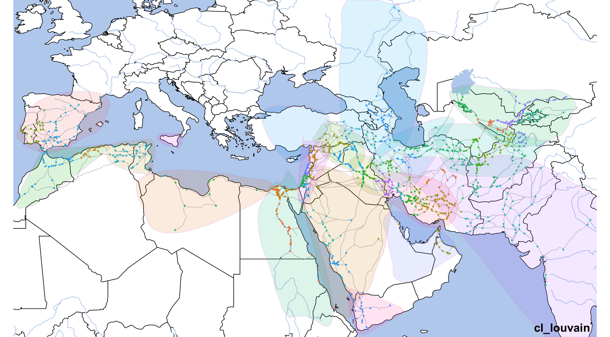
10.4.9 Centrality measures: Degree, Eigenvector, and Betweenness
We have already calculated those (you can find relevant lines of code by searchinf for “degree” and “betweenness”).
Degrees will show us the most highly connected nodes in the network.
althurayyaDegreeLabels <- althurayyaNodes %>%
slice_max(order_by = degree, n = 15)
minVal = min(althurayyaNodes$degree)
maxVal = max(althurayyaNodes$degree)
lowColor = "darkgreen"
highColor = "red"
# final map
currentMap <- IslamicWorldBase +
geom_point(data=althurayyaNodesFilt, aes(x=LON, y=LAT, color=degree, size=degree, alpha=degree)) +
geom_label_repel(data=althurayyaDegreeLabels, aes(x=LON, y=LAT, label=TR), size=1.5, segment.size=0.25) +
annotate("text", label="degrees", x=80, y=12.5, angle=0, hjust=1, vjust=0, size=4, col="black", alpha=1, fontface="bold") +
coord_sf(xlim=c(min(althurayyaNodesFilt$LON)-1, max(althurayyaNodesFilt$LON)+1),
ylim=c(min(althurayyaNodesFilt$LAT)-1, max(althurayyaNodesFilt$LAT)+1),
expand=FALSE) +
scale_colour_gradient(low=lowColor, high=highColor) +
scale_size_continuous(range=c(0.001,3), limits=c(minVal,maxVal))
# and saving
gt <- ggplot_gtable(ggplot_build(currentMap))
ge <- subset(gt$layout, name == "panel")
ggsave(file=paste0("./files/networks/IW_degrees.png"),
plot=grid.draw(gt[ge$t:ge$b, ge$l:ge$r]),
dpi=300,width=8,height=4.6)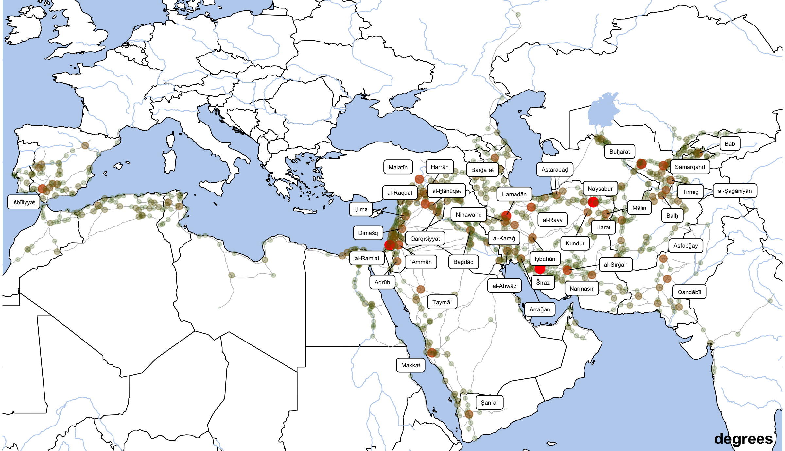
Eienvector centrality
althurayyaDegreeLabels <- althurayyaNodes %>%
slice_max(order_by = centr_betw, n = 10)
minVal = min(althurayyaNodes$centr_betw)
maxVal = max(althurayyaNodes$centr_betw)
lowColor = "darkgreen"
highColor = "red"
# final map
currentMap <- IslamicWorldBase +
geom_point(data=althurayyaNodes, aes(x=LON, y=LAT, color=centr_betw, size=centr_betw, alpha=centr_betw)) +
geom_label_repel(data=althurayyaDegreeLabels, aes(x=LON, y=LAT, label=TR), size=1.5, segment.size=0.25, max.overlaps = 100) +
annotate("text", label="centr betweenness", x=80, y=12.5, angle=0, hjust=1, vjust=0, size=4, col="black", alpha=1, fontface="bold") +
coord_sf(xlim=c(min(althurayyaNodesFilt$LON)-1, max(althurayyaNodesFilt$LON)+1),
ylim=c(min(althurayyaNodesFilt$LAT)-1, max(althurayyaNodesFilt$LAT)+1),
expand=FALSE) +
scale_colour_gradient(low=lowColor, high=highColor) +
scale_size_continuous(range=c(0.001,3), limits=c(minVal,maxVal))
# and saving
gt <- ggplot_gtable(ggplot_build(currentMap))
ge <- subset(gt$layout, name == "panel")
ggsave(file=paste0("./files/networks/IW_centr_betw.png"),
plot=grid.draw(gt[ge$t:ge$b, ge$l:ge$r]),
dpi=300,width=8,height=4.6)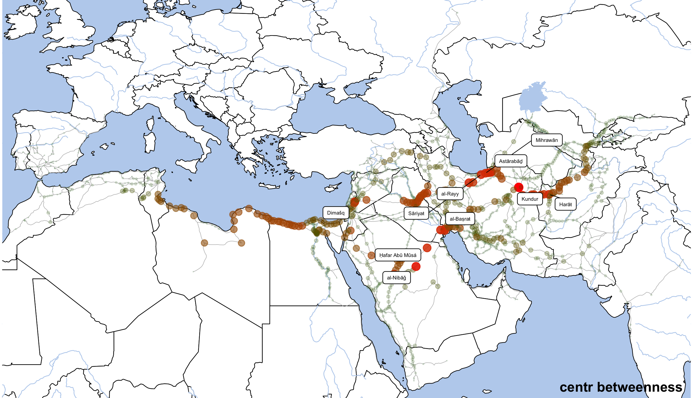
althurayyaDegreeLabels <- althurayyaNodes %>%
slice_max(order_by = centr_eigen, n = 5)
minVal = min(althurayyaNodes$centr_eigen)
maxVal = max(althurayyaNodes$centr_eigen)
lowColor = "darkgreen"
highColor = "red"
# final map
currentMap <- IslamicWorldBase +
geom_point(data=althurayyaNodesFilt, aes(x=LON, y=LAT, color=centr_eigen, size=centr_eigen, alpha=centr_eigen)) +
geom_label_repel(data=althurayyaDegreeLabels, aes(x=LON, y=LAT, label=TR), size=1.5, segment.size=0.25, max.overlaps = 100) +
annotate("text", label="centr eigenvector", x=80, y=12.5, angle=0, hjust=1, vjust=0, size=4, col="black", alpha=1, fontface="bold") +
coord_sf(xlim=c(min(althurayyaNodesFilt$LON)-1, max(althurayyaNodesFilt$LON)+1),
ylim=c(min(althurayyaNodesFilt$LAT)-1, max(althurayyaNodesFilt$LAT)+1),
expand=FALSE) +
scale_colour_gradient(low=lowColor, high=highColor) +
scale_size_continuous(range=c(0.001,3), limits=c(minVal,maxVal))
# and saving
gt <- ggplot_gtable(ggplot_build(currentMap))
ge <- subset(gt$layout, name == "panel")
ggsave(file=paste0("./files/networks/IW_centr_eigen.png"),
plot=grid.draw(gt[ge$t:ge$b, ge$l:ge$r]),
dpi=300,width=8,height=4.6)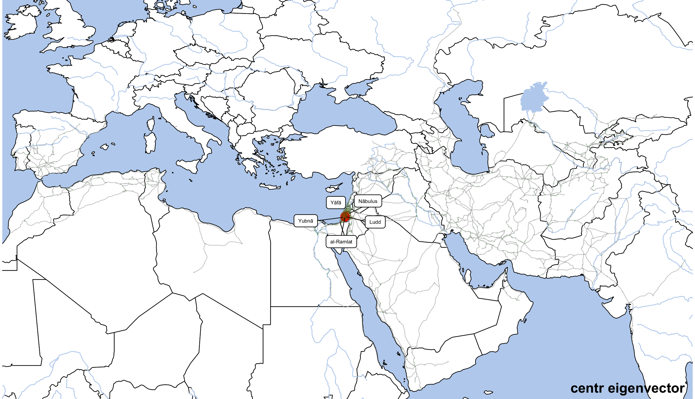
This is a very large network. We can try to reduce it—take a closer look at a specific region.
[1] "Fars_RE" "Sind_RE" "Mawarannahr_RE" "Iraq_RE" "Daylam_RE" "Misr_RE" "Khuzistan_RE" "Jibal_RE" "Khurasan_RE"
[10] "Rihab_RE" "Andalus_RE" "Mafaza_RE" "JaziratArab_RE" "BadiyatArab_RE" "Yaman_RE" "Sham_RE" "Aqur_RE" "Maghrib_RE"
[19] "Barqa_RE" "Kirman_RE" "Khazar_RE" "Sijistan_RE" "Rum_RE" "Ifriqiyya_RE" "Farghana" "Iraq" "Misr" northEast <- mapLayer_Filtered %>%
filter(grepl("Mawarannahr_RE|Khurasan_RE", REG_MESO))
althurayyaE_northEast <- althurayyaE %>%
filter(source %in% northEast$URI & target %in% northEast$URI)
althurayyaNetwork <- graph_from_data_frame(d=althurayyaE_northEast, directed=F)
# centrality measures
V(althurayyaNetwork)$degree <- degree(althurayyaNetwork, mode="all")
V(althurayyaNetwork)$centr_degree <- centr_degree(althurayyaNetwork, mode="all", normalized=T)$res
V(althurayyaNetwork)$centr_eigen <- centr_eigen(althurayyaNetwork, directed=F, normalized=F)$vector
V(althurayyaNetwork)$betweenness <- betweenness(althurayyaNetwork, directed=F)
V(althurayyaNetwork)$centr_betw <- centr_betw(althurayyaNetwork, directed=F, normalized=T)$res
# clustering (selected algorithms) some of these alrgorithms may take a minute of two to run
V(althurayyaNetwork)$cl_walktrap <- as.character(cluster_walktrap(althurayyaNetwork)$membership)
V(althurayyaNetwork)$cl_louvain <- as.character(cluster_louvain(althurayyaNetwork)$membership)
# extract nodes/vertices for mapping
althurayyaNodes <- as_data_frame(althurayyaNetwork, what="vertices")
althurayyaNodes <- althurayyaNodes %>%
rename(URI = name) %>%
left_join(mapLayer, by="URI") %>%
filter(!is.na(aRegion))# DEGREE
althurayyaDegreeLabels <- althurayyaNodes %>%
slice_max(order_by = degree, n = 15)
minVal = min(althurayyaNodes$degree)
maxVal = max(althurayyaNodes$degree)
lowColor = "darkgreen"
highColor = "red"
# final map
currentMap <- IslamicWorldBase +
geom_point(data=althurayyaNodes, aes(x=LON, y=LAT, color=degree, size=degree, alpha=degree)) +
geom_label_repel(data=althurayyaDegreeLabels, aes(x=LON, y=LAT, label=TR), size=1.5, segment.size=0.25) +
annotate("text", label="degrees", x=80, y=12.5, angle=0, hjust=1, vjust=0, size=4, col="black", alpha=1, fontface="bold") +
coord_sf(xlim=c(min(althurayyaNodes$LON)-1, max(althurayyaNodes$LON)+1),
ylim=c(min(althurayyaNodes$LAT)-1, max(althurayyaNodes$LAT)+1),
expand=FALSE) +
scale_colour_gradient(low=lowColor, high=highColor) +
scale_size_continuous(range=c(0.001,3), limits=c(minVal,maxVal))
# and saving
gt <- ggplot_gtable(ggplot_build(currentMap))
ge <- subset(gt$layout, name == "panel")
ggsave(file=paste0("./files/networks/IW_NorthEast_Degree.png"),
plot=grid.draw(gt[ge$t:ge$b, ge$l:ge$r]),
dpi=300,width=8,height=4.6)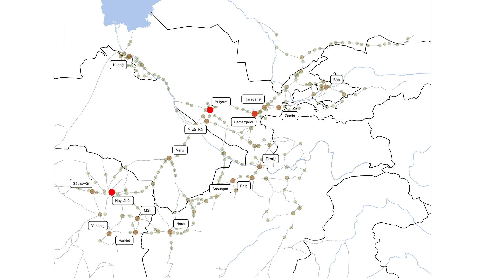
# EIGENVECTOR
althurayyaDegreeLabels <- althurayyaNodes %>%
slice_max(order_by = centr_eigen, n = 15)
minVal = min(althurayyaNodes$centr_eigen)
maxVal = max(althurayyaNodes$centr_eigen)
lowColor = "darkgreen"
highColor = "red"
# final map
currentMap <- IslamicWorldBase +
geom_point(data=althurayyaNodes, aes(x=LON, y=LAT, color=centr_eigen, size=centr_eigen, alpha=centr_eigen)) +
geom_label_repel(data=althurayyaDegreeLabels, aes(x=LON, y=LAT, label=TR), size=1.5, segment.size=0.25, max.overlaps = 100) +
annotate("text", label="degrees", x=80, y=12.5, angle=0, hjust=1, vjust=0, size=4, col="black", alpha=1, fontface="bold") +
coord_sf(xlim=c(min(althurayyaNodes$LON)-1, max(althurayyaNodes$LON)+1),
ylim=c(min(althurayyaNodes$LAT)-1, max(althurayyaNodes$LAT)+1),
expand=FALSE) +
scale_colour_gradient(low=lowColor, high=highColor) +
scale_size_continuous(range=c(0.001,3), limits=c(minVal,maxVal))
# and saving
gt <- ggplot_gtable(ggplot_build(currentMap))
ge <- subset(gt$layout, name == "panel")
ggsave(file=paste0("./files/networks/IW_NorthEast_centr_eigen.png"),
plot=grid.draw(gt[ge$t:ge$b, ge$l:ge$r]),
dpi=300,width=8,height=4.6)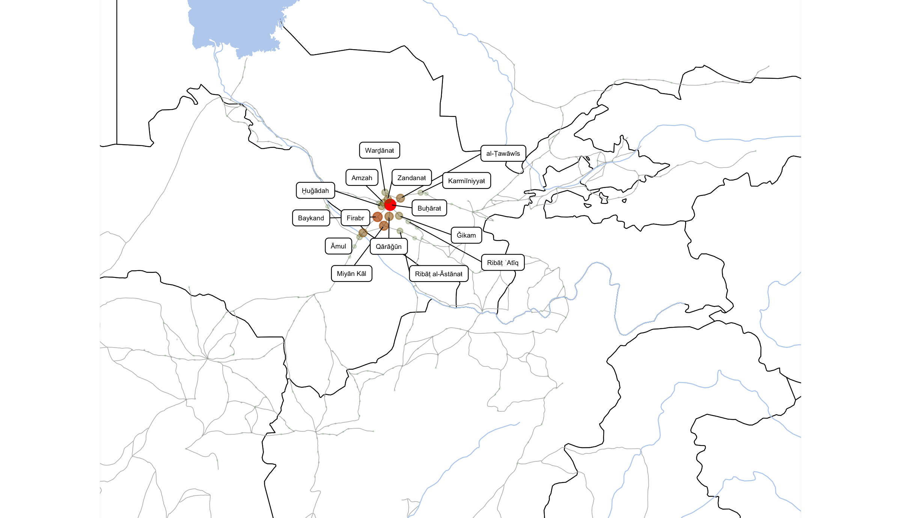
# BETWEENNESS
althurayyaDegreeLabels <- althurayyaNodes %>%
slice_max(order_by = centr_betw, n = 15)
minVal = min(althurayyaNodes$centr_betw)
maxVal = max(althurayyaNodes$centr_betw)
lowColor = "darkgreen"
highColor = "red"
# final map
currentMap <- IslamicWorldBase +
geom_point(data=althurayyaNodes, aes(x=LON, y=LAT, color=centr_betw, size=centr_betw, alpha=centr_betw)) +
geom_label_repel(data=althurayyaDegreeLabels, aes(x=LON, y=LAT, label=TR), size=1.5, segment.size=0.25, max.overlaps = 100) +
annotate("text", label="degrees", x=80, y=12.5, angle=0, hjust=1, vjust=0, size=4, col="black", alpha=1, fontface="bold") +
coord_sf(xlim=c(min(althurayyaNodes$LON)-1, max(althurayyaNodes$LON)+1),
ylim=c(min(althurayyaNodes$LAT)-1, max(althurayyaNodes$LAT)+1),
expand=FALSE) +
scale_colour_gradient(low=lowColor, high=highColor) +
scale_size_continuous(range=c(0.001,3), limits=c(minVal,maxVal))
# and saving
gt <- ggplot_gtable(ggplot_build(currentMap))
ge <- subset(gt$layout, name == "panel")
ggsave(file=paste0("./files/networks/IW_NorthEast_centr_betws.png"),
plot=grid.draw(gt[ge$t:ge$b, ge$l:ge$r]),
dpi=300,width=8,height=4.6)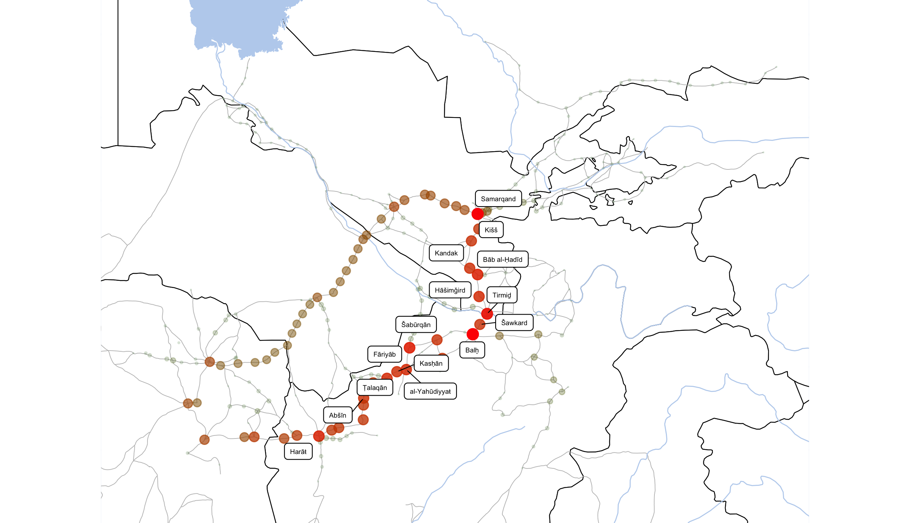
10.4.10 Sparsifying a Network
In some cases your network may be too dense. This will effecively mean that you will not be able to get anything useful from social network analysis methods. What one needs to do in this case is to make the network more sparse. There is a number of ways how one can do this. Ideally, one needs to remodel the network by revising parameters that go into the weights of edges. The simplest way to “sparsify” a network is by deleting edges whose weight is below a certain threshold. In the example below, edges whose value is below mean are deleted from the network. As a result the network should break down into more distinct communities (or, actually, disconnected components).
cut.off <- mean(E(iwNetwork)$weight)
summary(E(iwNetwork)$weight)## Min. 1st Qu. Median Mean 3rd Qu. Max.
## 1687 23842 38387 55530 62771 861693cutt.off <- 62771
iwNetwork_sparse <- delete_edges(iwNetwork, E(iwNetwork)[weight > cut.off])Let’s try to map these disconnected components:
cut.off <- 62771 # 1687 23842 38387 55530 62771 861693
fileName <- paste0("./files/networks/IW_sparse_75f.png")
iwNetwork_sparse <- delete_edges(iwNetwork, E(iwNetwork)[weight >= cut.off])
nodesLight <- nodes %>%
select(settlement_id, lon, lat, top_type)
edges_sparce <- as_data_frame(iwNetwork_sparse, what="edges") %>%
select(from, to) %>%
left_join(nodesLight, by = c("from" = "settlement_id")) %>%
left_join(nodesLight, by = c("to" = "settlement_id")) %>%
filter(top_type.x != "waystations" & top_type.x != "xroads") %>%
filter(top_type.y != "waystations" & top_type.y != "xroads")
currentMap <- IslamicWorldBase +
geom_segment(data = edges_sparce, aes(x=lon.x, y=lat.x, xend=lon.y, yend=lat.y), col="red", size=0.5) +
coord_sf(xlim=c(min(nodes$lon)-1, max(nodes$lon)+1),
ylim=c(min(nodes$lat)-1, max(nodes$lat)+1),
expand=FALSE)
gt <- ggplot_gtable(ggplot_build(currentMap))
ge <- subset(gt$layout, name == "panel")
ggsave(file=fileName,
# the following line focuses on the graph
plot=grid.draw(gt[ge$t:ge$b, ge$l:ge$r]),
# width and height should be experimentally adjusted to remove white space
dpi=300,width=8.4,height=4.65)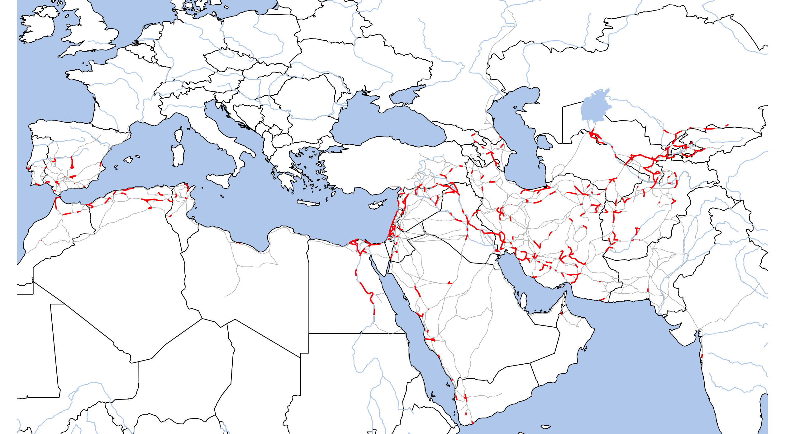
10.4.11 Other networks on maps
Another valuable—perhaps even most valuable—combination of SNA and GIS is mapping other kinds of data as geographical networks. Let’s take a look at the following example:
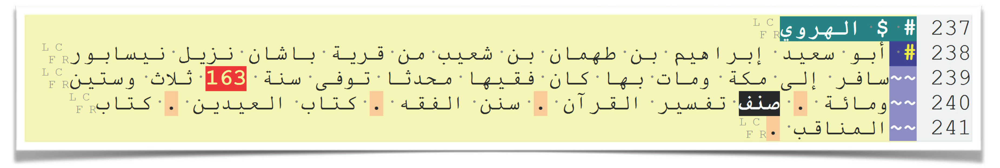
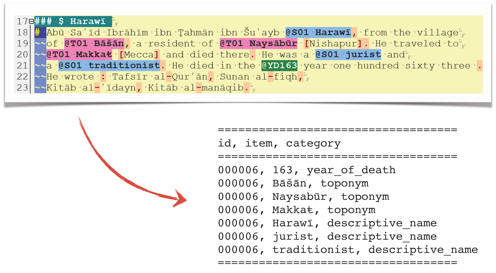
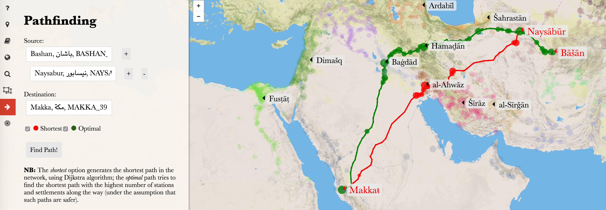
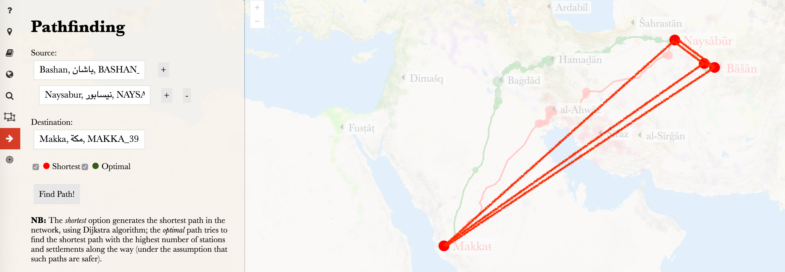
Let’s create networks from the data.
TI_GeoData <- read_delim("./data_temp/althurayya/TI_GeoData_for_R.csv", "\t", escape_double = FALSE, trim_ws = TRUE)
head(TI_GeoData)## # A tibble: 6 x 3
## BIO ITEM TYPE
## <chr> <chr> <chr>
## 1 TI000047 50 DEATH_AH
## 2 TI000048 50 DEATH_AH
## 3 TI000048 البصرة TOPO_PR
## 4 TI000049 50 DEATH_AH
## 5 TI000050 50 DEATH_AH
## 6 TI000051 50 DEATH_AHThe structure of this data file is as follows: BIO — id of a biography (i.e., a person); ITEM includes a value of a data type defined in the column TYPE. TYPE includes the following values: 1) DEATH_AH—decade of the death of a biographee, according to the Islamic hijrī calendar (anno hegirae); TOPO_PR—a place with which a person is closely associated (“resident of …”); TOPO_SE—a place with which a person is associated (“visitor of …”).
We can split our data into two data frames: with dates and with toponyms.
# split > ID_Dates and ID_TOPO
TIdates <- TI_GeoData %>%
filter(TYPE=="DEATH_AH") %>%
rename(DEATH = ITEM)
TIdates$DEATH <- as.numeric(TIdates$DEATH)
TIgeoData <- TI_GeoData %>%
filter(TYPE=="TOPO_PR" | TYPE=="TOPO_SE") %>%
rename(TOPO = ITEM)Let’s generate a network on the level of primary toponyms (not regional):
NW_Data_Settl <- data.frame()
idVector = unique(TIgeoData$BIO)
TIgeoDataRichTOP <- TIgeoData %>%
left_join(mapLayer, by="TOPO") %>%
filter(!is.na(aRegion)) %>%
select(BIO, URI) %>%
unique()
# the following loop is quite slow; use it as a reference for similar cases
# for (ID in idVector){
# temp <- TIgeoDataRichTOP %>%
# filter(BIO==ID)
#
# if(nrow(temp) > 1){
#
# rows <- t(combn(sort(unique(temp$URI)), 2)) %>%
# as.data.frame() %>%
# mutate(BIO=ID) %>%
# rename(FROM=V1) %>%
# rename(TO=V2) %>%
# select(BIO, FROM, TO)
#
# NW_Data_Settl <- rbind(NW_Data_Settl, rows)
# }
# }
#saveRDS(NW_Data_Settl, "./data_temp/althurayya/TI_generated_edges.rds")
NW_Data_Settl <- readRDS("./data_temp/althurayya/TI_generated_edges.rds")
head(NW_Data_Settl)## BIO FROM TO
## 1 TI000052 BASRA_477E304N_S HIJAZ_390E235N_R
## 2 TI000052 BASRA_477E304N_S Yaman_RE
## 3 TI000052 HIJAZ_390E235N_R Yaman_RE
## 4 TI000053 Rum_RE Sham_RE
## 5 TI000054 Ifriqiyya_RE Maghrib_RE
## 6 TI000054 Ifriqiyya_RE Misr_REThe most important line of code in the chunk above is t(combn(sort(unique(temp$URI)), 2)) — it allows you to generate all possible pairs from a list/vector of values. Let’s take a closer look at a smaller example:
vectorWithNodes <- c("Baghdad", "Nishapur", "Basra", "Damascus", "Cairo")
edgesGenerated <- t(combn(sort(unique(vectorWithNodes)), 2)) %>%
as.data.frame() %>%
rename(FROM=V1) %>%
rename(TO=V2) %>%
select(FROM, TO)
edgesGenerated## FROM TO
## 1 Baghdad Basra
## 2 Baghdad Cairo
## 3 Baghdad Damascus
## 4 Baghdad Nishapur
## 5 Basra Cairo
## 6 Basra Damascus
## 7 Basra Nishapur
## 8 Cairo Damascus
## 9 Cairo Nishapur
## 10 Damascus NishapurNow, let’s go back to our data and create a network from it: 1) we need to calculate weights of edges, by counting the number of the same edges; 2) create a network object and run the same analyses that we did before; 3) then we can map it.
NW_Data_Final <- NW_Data_Settl %>%
group_by(FROM, TO) %>%
summarize(WEIGHT = n())
head(NW_Data_Final)## # A tibble: 6 x 3
## # Groups: FROM [1]
## FROM TO WEIGHT
## <chr> <chr> <int>
## 1 ABARQUH_532E311N_S BAGHDAD_443E333N_S 5
## 2 ABARQUH_532E311N_S BASRA_477E304N_S 1
## 3 ABARQUH_532E311N_S DIMASHQ_363E335N_S 3
## 4 ABARQUH_532E311N_S FASA_536E289N_S 1
## 5 ABARQUH_532E311N_S HAMADHAN_485E347N_S 2
## 6 ABARQUH_532E311N_S HARRAN_390E368N_S 3Now, the network and the analyses:
NW_Final <- graph_from_data_frame(d=NW_Data_Final, directed=F)
# centrality measures
V(NW_Final)$degree <- degree(NW_Final, mode="all")
# clustering (selected algorithms) some of these alrgorithms may take a minute of two to run
V(NW_Final)$cl_walktrap <- as.character(cluster_walktrap(NW_Final)$membership)
V(NW_Final)$cl_leading_eigen <- as.character(cluster_leading_eigen(NW_Final)$membership)
#V(NW_Final)$cl_edge_betweenness <- as.character(cluster_edge_betweenness(NW_Final)$membership) # too slow
V(NW_Final)$cl_fast_greedy <- as.character(cluster_fast_greedy(NW_Final)$membership) # too slow
V(NW_Final)$cl_louvain <- as.character(cluster_louvain(NW_Final)$membership)
# extract nodes/vertices for mapping
NW_Final_Nodes <- as_data_frame(NW_Final, what="vertices")
NW_Final_Nodes <- NW_Final_Nodes %>%
rename(URI = name) %>%
left_join(mapLayer, by="URI")
head(NW_Final_Nodes)## URI degree cl_walktrap cl_leading_eigen cl_fast_greedy
## 1 ABARQUH_532E311N_S 27 1 1 2
## 2 ABBADAN_482E303N_S 33 1 3 2
## 3 ABHAR_492E361N_S 19 1 3 3
## 4 ABIWARD_595E372N_S 29 1 1 2
## 5 ADHANA_353E369N_S 43 1 3 2
## 6 ADHARBAYJAN_479E382N_R 136 3 1 2
## cl_louvain REG_MESO aRegion TR SEARCH EN TYPE
## 1 2 Fars_RE SW_Iran_MR Abarqūh Abarquh <NA> towns
## 2 2 Iraq_RE Iraq_MR ʿAbbādān Abbadan <NA> towns
## 3 3 Jibal_RE NW_Iran_MR Abhar Abhar <NA> towns
## 4 2 Khurasan_RE NE_Iran_MR Abīward Abiward <NA> towns
## 5 2 Sham_RE Sham_MR Aḏanaŧ Adhana <NA> waystations
## 6 4 Rihab_RE Qabq_MR Aḏarbayǧān Adharbayjan <NA> regions
## LON LAT AR AR_Alt AR_Sort AMBIG TRUETOP TOPO
## 1 53.25737 31.15094 أبرقوه أبرقوه ابرقوه 0 0 ابرقوه
## 2 48.27394 30.33563 عبادان عبادان عبادان 0 0 عبادان
## 3 49.23473 36.15722 أبهر أبهر ابهر 0 0 ابهر
## 4 59.59733 37.27000 أبيورد أبيورد ابيورد 0 0 ابيورد
## 5 35.34272 36.96023 أذنة أذنة اذنة 0 0 اذنة
## 6 47.95801 38.24076 أذربيجان أذربيجان اذربيجان 0 1 اذربيجانNow, we can map results of our analysis:
unique(NW_Final_Nodes$cl_louvain)## [1] "2" "3" "4" "1"set.seed(12)
# final map
currentMap <- IslamicWorldBaseBare +
geom_point(data=NW_Final_Nodes, aes(x=LON, y=LAT, color=cl_louvain, size=degree), alpha=0.75) +
annotate("text", label="TI (700): cl_louvain", x=80, y=12.5, angle=0, hjust=1, vjust=0, size=4, col="black", alpha=1, fontface="bold") +
coord_sf(xlim=c(min(althurayyaNodesFilt$LON)-1, max(althurayyaNodesFilt$LON)+1),
ylim=c(min(althurayyaNodesFilt$LAT)-1, max(althurayyaNodesFilt$LAT)+1),
expand=FALSE) +
scale_size_continuous(range=c(0.5,5))
# and saving
gt <- ggplot_gtable(ggplot_build(currentMap))
ge <- subset(gt$layout, name == "panel")
ggsave(file=paste0("./files/networks/IW_TI_000_700_cl_louvain.png"),
plot=grid.draw(gt[ge$t:ge$b, ge$l:ge$r]),
dpi=300,width=8.4,height=4.65)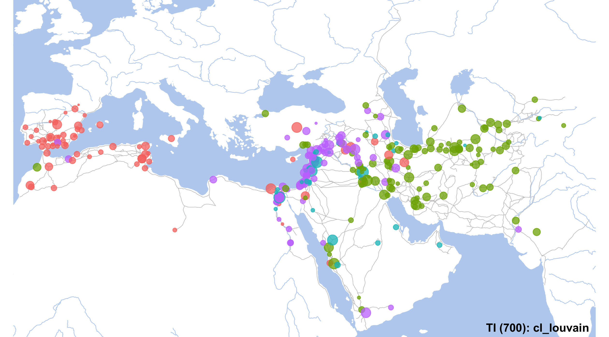
unique(NW_Final_Nodes$cl_walktrap)## [1] "1" "3" "2" "4"set.seed(12)
# final map
currentMap <- IslamicWorldBaseBare +
#geom_encircle(data=mapLayer_Filtered, s_shape=.1, expand=0.01, alpha=.15, aes(x=LON, y=LAT, col=aRegion, fill=aRegion, group=aRegion)) +
geom_point(data=NW_Final_Nodes, aes(x=LON, y=LAT, color=cl_walktrap, size=degree), alpha=0.75) +
annotate("text", label="TI (700): cl_walktrap", x=80, y=12.5, angle=0, hjust=1, vjust=0, size=4, col="black", alpha=1, fontface="bold") +
coord_sf(xlim=c(min(althurayyaNodesFilt$LON)-1, max(althurayyaNodesFilt$LON)+1),
ylim=c(min(althurayyaNodesFilt$LAT)-1, max(althurayyaNodesFilt$LAT)+1),
expand=FALSE) +
scale_size_continuous(range=c(0.5,5))
# and saving
gt <- ggplot_gtable(ggplot_build(currentMap))
ge <- subset(gt$layout, name == "panel")
ggsave(file=paste0("./files/networks/IW_TI_000_700_cl_walktrap.png"),
plot=grid.draw(gt[ge$t:ge$b, ge$l:ge$r]),
dpi=300,width=8.4,height=4.65)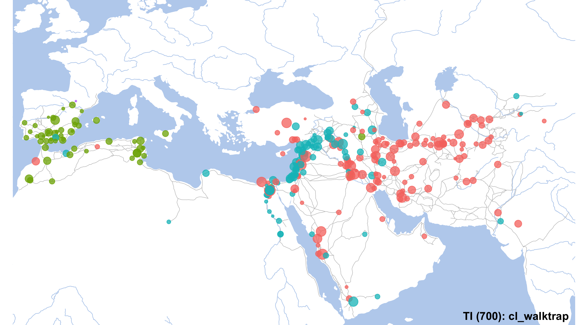
10.5 Additional Materials on Networks in R
Katherine Ognyanova (2017-2018). Static and dynamic network visualization with R. https://kateto.net/network-visualization.
Chapter 6 in: Arnold, Taylor, and Lauren Tilton. 2015. Humanities Data in R. New York, NY: Springer Science+Business Media.
See also: Chapter 1 in Yunran Chen. Introduction to Network Analysis Using R (https://yunranchen.github.io/intro-net-r/index.html)
Jesse Sadler. 2017. Introduction to Network Analysis with R: Creating static and interactive network graphs, https://www.jessesadler.com/post/network-analysis-with-r/.
On communities:
10.6 Homework
- A Subway Network:
- create data for a subway system of Vienna or any other city of your choice (nodes and edges)
- visualize the network;
- find most important nodes (use centrality measures); visualize your results;
- write code that finds the shortest path between any two nodes.
- Pick 3 to 5 of the above explained tasks and repeat them using different data.
- Suggested data:
- Orbis Data (https://purl.stanford.edu/mn425tz9757); website: https://orbis.stanford.edu/
- ORBIS is a multimodal, seasonally variable transportation network model available at orbis.stanford.edu. The model provides for practically unlimited permutations by allowing users to limit modes, change movement cost, and adjust time of year. However, it is as a more simple network that ORBIS can be usefully integrated into other research, such as historical environmental reconstruction or agent-based modeling set in the Roman world.
- Data of your own choice.
- Orbis Data (https://purl.stanford.edu/mn425tz9757); website: https://orbis.stanford.edu/
- Suggested data:
10.7 Submitting homework
- Homework assignment must be submitted by the beginning of the next class;
- Email your homework to the instructor as attachments.
- In the subject of your email, please, add the following:
070184-LXX-HW-YourLastName-YourMatriculationNumber, whereLXXis the numnber of the lesson for which you submit homework;YourLastNameis your last name; andYourMatriculationNumberis your matriculation number.
- In the subject of your email, please, add the following:
Data on Vienna for a possible project: https://www.geschichtewiki.wien.gv.at/Personen_Zeitleiste; http://www.dasrotewien.at/↩︎